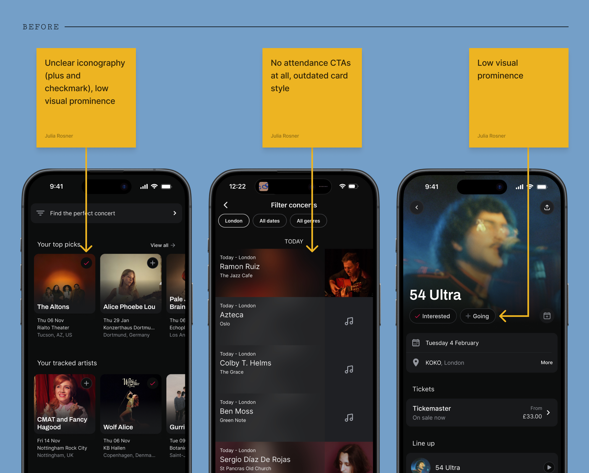
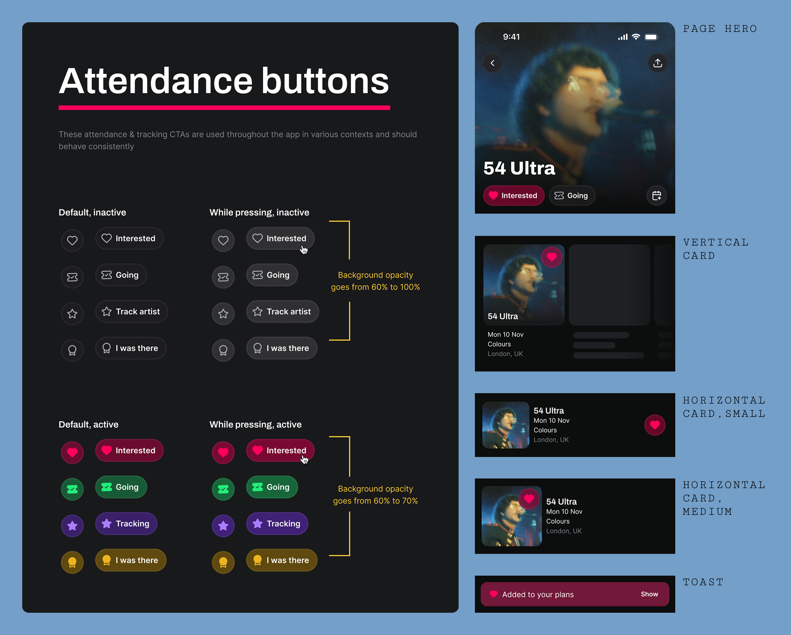
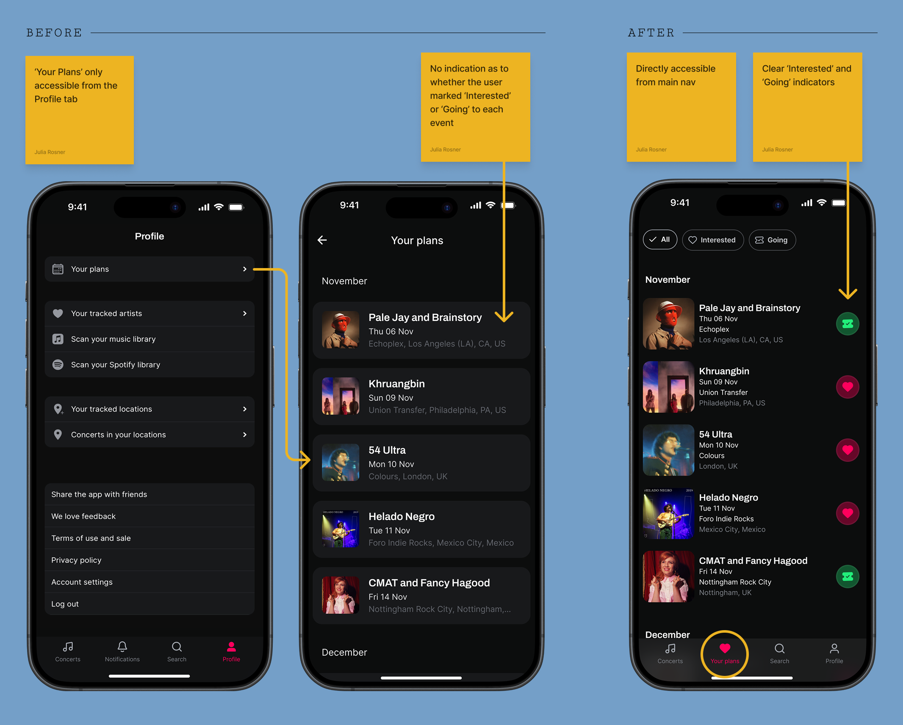
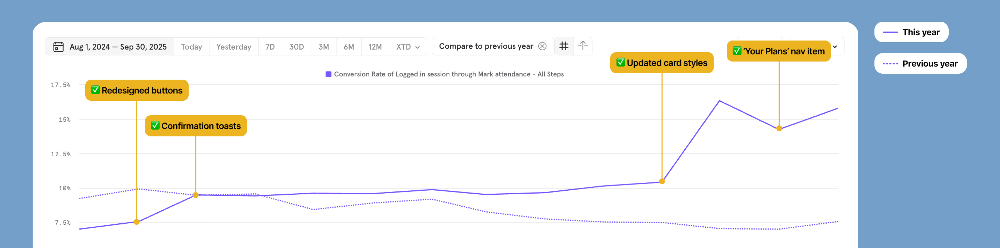
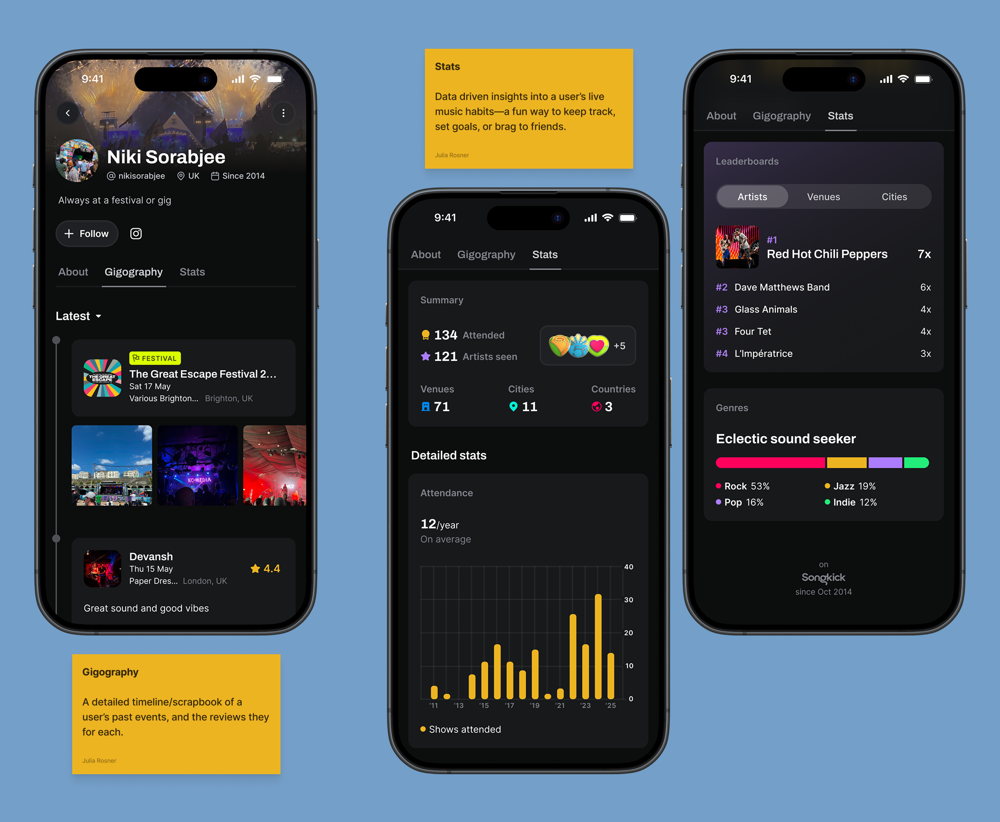

Overview
On Songkick, marking 'Interested' or 'Going' to an event is one of the most important actions a user can take. It feeds personalised content, powers re-engagement channels, and directly contributes to marketable audience segmentation — making it central to both the user experience and the business model.
With extremely limited engineering bandwidth and a mandate to avoid major feature builds, we had to identify high-leverage opportunities that could move the needle without rebuilding anything from scratch.
Context
19% of sessions resulted in finding an event — but only 7% of users actually marked attendance. The problem wasn't the quality of recommendations. The engagement mechanisms simply weren't in place.
The business case
Marking attendance improves long-term user data quality, improves the feed experience, and increases LTV. It also directly feeds Songkick's marketable audience segmentation — a key commercial lever.
The constraint
2 engineers, no major feature builds. We had to shift focus from building new to optimising existing. As a team, we agreed attendance was the biggest opportunity area.
Research & hypothesis
I carried out a detailed audit of every screen where attendance-marking could plausibly be surfaced. The finding: no single screen was the failure point. Instead, the 'Interested/Going' options were simply not sufficiently visible, consistent, or available at the moment of highest user intent.
In continuous discovery interviews, 4 out of 6 app users told us they were unsure what the '+' symbol meant or what value it would provide. The core action was hidden in plain sight.
Hypothesis: the lack of systemic availability was the key opportunity — driving improvement through low-effort, high-impact component changes rather than new features.

Mapping every screen where attendance could be surfaced revealed the scope of the systemic gap
Design approach: ubiquitous, consistent, reusable
My approach was to ensure the attendance marking options were systemically surfaced at every relevant touchpoint across the app. This was achieved by designing a small set of reusable, high-visibility button components that could be deployed across the entire product ecosystem with minimal engineering work.
First, new components
I designed a recognizable set of high-visibility Interested/Going CTAs and toasts, ensuring maximum visual consistency and reusability. In conjunction with this I also redesigned ‘Tracking’ and ‘I was there’ CTAs to be part of the same family of CTAs. For the high-traffic horizontal event cards, I streamlined the secondary action into a single CTA button that cycles through the three possible states (Not Set → Interested → Going). This reduces friction in the highest-volume areas of the app, instantly exposing the core action.

The new Interested/Going CTA family — designed once, deployed across every surface in the app
Then: a simple nav change
The section summarising a user's saved events ('Your Plans') was buried on the Profile page. This reduced discoverability and — since events weren't differentiated by 'Interested' or 'Going' status — made it cumbersome to use as a tool for planning, lowering the incentive to mark attendance even further.
The solution was simple and high-leverage: promote 'Your Plans' to its own dedicated nav item in the bottom tab bar. This immediately solved the discoverability issue. We also integrated the new attendance CTA directly into the list view, allowing users to verify and modify their status without leaving the page — closing the feedback loop and reinforcing the marking behaviour.

Promoting 'Your Plans' to the main tab bar immediately closed the feedback loop for attendance marking
Outcomes
The attendance marking rate doubled over the course of three quarters, validating our strategy of targeted, component-level improvements. Each shipped change produced a visible step-change in the metric.
Reflection
Leveraging the design system. Working with reusable components was the key enabler. The design system functioned as a force multiplier — solving multiple localised UX problems through a handful of systemic changes, justifying the design investment to the business.
Visibility is king. The sheer impact of making core CTAs consistent and visible across the entire app exceeded initial expectations. The primary block was discoverability and systemic friction, not a single broken screen.
Shifting user behaviour. We transformed attendance marking from a hidden feature used mainly by power users into an intuitive, ubiquitous touchpoint that delivers immediate value and reinforces engagement.

The final component system in production — consistent, labelled, and available at every moment of user intent

Each shipped iteration produced a visible step-change — from 7% to ~15% over three quarters
Thinking ahead
While our optimisation efforts established a strong 15% baseline, I initiated a feature exploration to identify what more radical growth could look like. This centred on redesigning the user profile to include attendance-powered features: a detailed 'Gigography' (a timeline and scrapbook of past events) and a 'Stats' section with data-driven insights into a user's live music habits.
Testing this vision with existing users provided strong initial validation:
"Right now I have 80–90% of my attendance. Stats would make me add it 100% of the time." — User testing participant

Concept designs for 'Gigography' and attendance-driven stats — both validated as high-motivation features in user testing